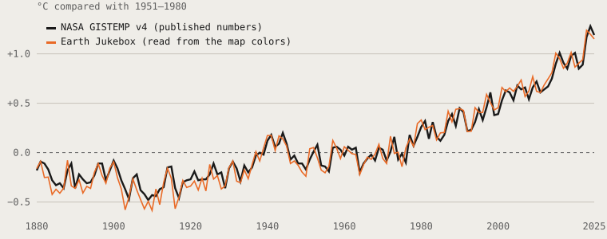

Global temperature, 1880–2025
Use it without seeing it
Move around the Earth and hear what NASA measured there. With Voice guide on, you can also slide a finger or move the mouse over the Earth to hear it. With a screen reader (VoiceOver, TalkBack), leave Voice guide off: your screen reader reads everything.
More keys on a computer
- Space play every year, first to last
- I fly one orbit with the Space Station
- 1 to 9 go to a place
- T tap here, R play your tune again
- Shift + arrows: small steps
- V voice guide on or off
- ? hear all the keys
Why we built it
- 43 million people are blind. NASA's Earth maps are made to be looked at, so they are shut out. Lancet Global Health, 2021
- 2.2 billion people live with a vision impairment. Many of them can't read a small color key. World Health Organization
- Every month since 1880, at any place on Earth, from NASA's own records. Your birthday month has a sound too. NASA GISTEMP v4
What changes
- Blind and low-vision people explore NASA's climate data on their own, by ear, with arrow keys, a screen reader or the voice guide.
- Families and classrooms turn their own story, in any language, into a song made from NASA data, and share it with a link.
- Everyone, hearing or not, can follow the music on the score display, which draws every note on the same scale as the sound.
- No barrier to start. It is free, needs no app or account, and works in the browser of an ordinary phone.
How it works
- We read NASA's color key. Every NASA map has a color bar that says what each color means. We read it, so every color becomes a number.
- Every spot gets a note. Higher numbers play higher notes, on a musical scale, so it always sounds like music. Each NASA visualization has its own instrument: temperature plays a marimba (much warmer than normal adds a second voice), ocean temperature plays a harp, and lightning plays drums (more lightning, more hits). Places with no data stay silent.
- You can hear it without seeing it. Move with the arrow keys and the app says where you are and what NASA measured there.
- You can see it without hearing it. Every note is also drawn on the score display, on the same scale as the sound, so the music works in a noisy room, on mute, or for people who are deaf or hard of hearing.
We checked our numbers against NASA's

- 0.07 °C average gap between the global temperature we read from the map's colors and NASA's published number, over all 146 years. They move together almost perfectly (correlation 0.98).
- +1.26 °C warming from 1880–1899 to 2015–2024 in what you hear. NASA's own number is +1.21 °C.
- Limits The map's colors stop at ±2 °C, so the hottest places, mostly the Arctic, play as "+2 °C or more". Near the poles the gap is larger, about 0.35 °C. Values are on a 2° grid.
Compared with NASA GISS GISTEMP v4 yearly global and zonal means. Anyone can repeat the check: scripts/validate.mjs.
Where the data comes from
Background: Earth's glowing night horizon, photographed from the International Space Station (NASA image iss072e030147, cropped).
"Normal" means the average temperature for 1951–1980. Numbers are read from the colors of NASA's map, so they are close but not exact.
More detail for scientists
Temperature: the equirectangular video has no printed color bar. Its colors match NASA's labelled map (the "vik" colormap) over −2 to +2 °C, which we checked against GISTEMP's published yearly means: the area-weighted global mean we read differs from GISTEMP by 0.07 °C on average (RMSE 0.085 °C, r = 0.98, 146 years) and fits the yearly series better than a 5-year running mean (0.08 °C), so the frames are single years. By latitude band the average gap is 0.07–0.12 °C between 64° S and 44° N, 0.21 °C at 44–64° N, and about 0.35 °C poleward of 64°, where colors saturate at ±2 °C and there are few cells. Values are read on a 2° grid; coastline pixels are skipped and gray "no data" cells stay silent.
Ocean: one frame of the ECCO2 model (19 June 2007), read against NASA's 0–32 °C color bar by hue, so the light and shadow of the flow lines do not change the number.
Months: when a moment or a question names a month, Earth Jukebox uses NASA GISS GISTEMP v4 monthly anomalies (1200 km smoothing, 2° grid, vs 1951–1980), the numbers behind the temperature map, read directly instead of from colors, so they are not capped at ±2 °C. Our stored grid's global mean is within 0.012 °C of NASA's published monthly global means on average (1,762 months).
The year bar has twelve steps per year. On a month, the globe shows that month (temperature drawn from NASA GISTEMP monthly numbers in the yearly map's colors, with NASA's coastlines; lightning from NASA's frames dated in that month); "Whole year" returns to NASA's published yearly map.
Play goes month by month: temperature plays NASA GISTEMP monthly numbers for the place (January 1880 to December 2025, 1,752 short notes in about 30 seconds; the globe shows each year's map), and lightning groups NASA's 10-day frames by the month of their date (March 2017 to August 2023). The Space Station passes over each place only a few times a month, so single lightning months jump around much more than whole years. The ocean track has one day only, so it has no months.
Lightning: the sensor on the Space Station only sees between about 56° north and 56° south, so places outside that band stay silent instead of claiming "no lightning". Values are the share of 10-day periods in which lightning was seen.
Built during the 2026 NASA Space Apps Challenge by Team Happy Squad (Sibu, Sarawak), with help from an AI coding assistant.
How to use Earth Jukebox without seeing the screen: a guide for screen reader users (English, 中文)